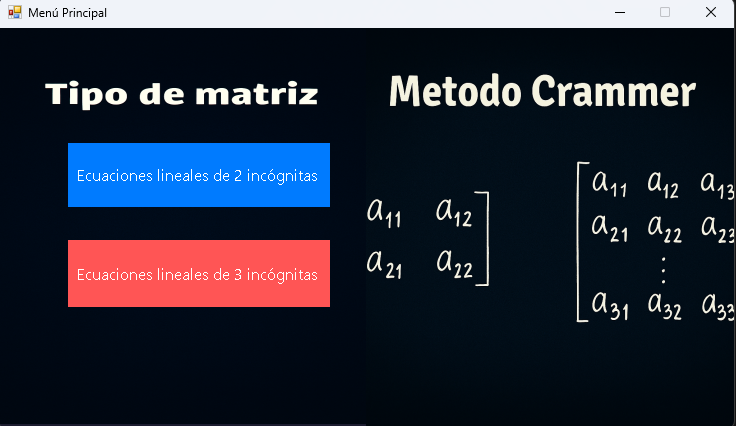

El método de Cramer es una técnica algebraica para resolver sistemas de ecuaciones lineales con el mismo número de ecuaciones que de incógnitas, utilizando determinantes. Este método garantiza una solución única siempre que el determinante de la matriz de coeficientes sea distinto de cero.
